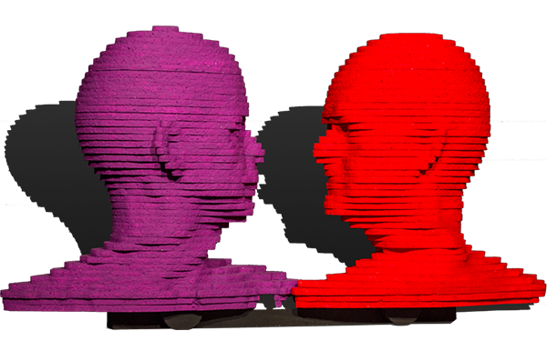
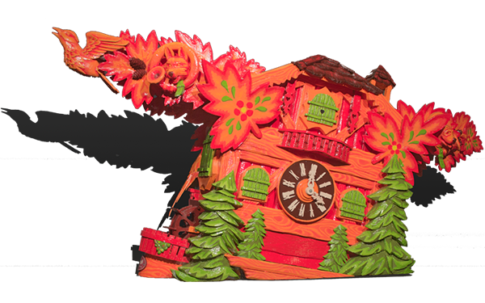
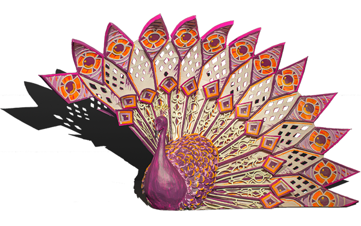
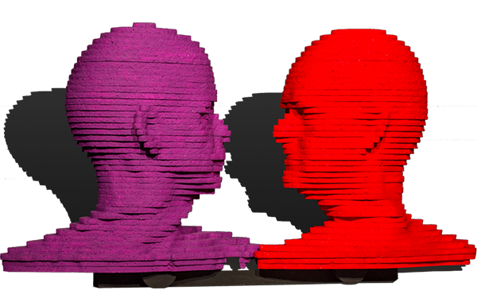
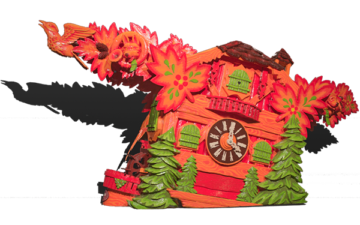
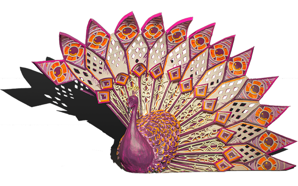
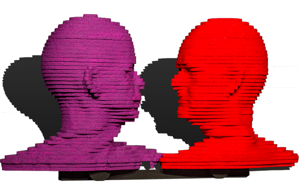
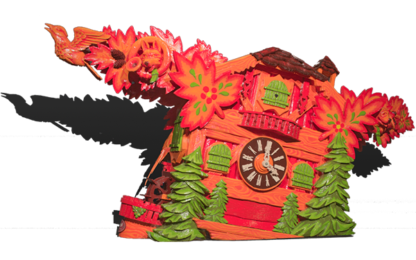
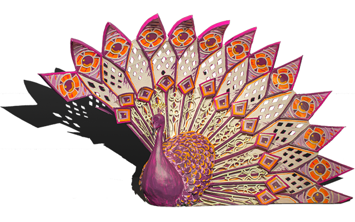

The Corso of Zundert is the biggest Corso (flower parade) in the world. All the work is done voluntarily. Twenty heralds compete against each other to build the most beautiful float, judged by a professional jury. It has been done so for over eighty years.


Twenty flags
Zundert is split up in twenty heralds who all build a corso float. Every herald has its own culture, its own identity and its own flag. The herald you choose is part of who you are.
Corso is for everybody
The corsovirus is passed from each generation to the next. All of it is a work of love, covered in iron, paper and glue; yet every individual in the herald takes its part.



 





Scale models
A scale model is made before building the floats. Each scale model is presented to the public in June.

Scale one to ten
The float designers are volunteers, just like the builders. They have a leading role; they turn their ideas into a scale model that will serve as a guide during the building process.
Spending your summer holidays in a tent
Corsobuilders spend their summer months in their herald‘s tent. The work at hand: welding concrete iron, sculpturing styrofoam and getting creative with papier-mâché.
Just dahlia‘s
Each herald has its own dahlia field. On these fields, dahlia’s grow in dozens of shapes and colors. Mostly the elderly within the herald plant the flower bulbs, trim the weeds and pick the flowers.
A hard day‘s night
‘Tapping’ the half a million dahlia’s on to the float only starts a few days before the parade. The tent turns in to an anthill, where everybody helps until the job is done. Even if it takes all night.
Het begin
Het corso is ontstaan in 1936. Winnares bij de versierde fietsen was Miep de Bie, van wie later een beeld is gemaakt door de Zundertse kunstenaar en corso-ontwerper Henk Groenhuis: het corsomeisje.


'40 - Jaren veertig
In 1947 verbaasde buurtschap Poteind vriend en vijand doordat hun wagen 'Bloemenkoningin' vanzelf reed, zonder dat er een paard voor stond. Onder de wagen zaten duwers. Dat is tot op de dag van vandaag de manier waarop corsowagens worden voortbewogen.
'50 - Jaren vijftig
Het corso nam in de jaren vijftig een grote vlucht. Corso's waren populair in die tijd, en het Zundertse corso genoot grote vermaardheid in binnen- en buitenland. In de topjaren kwamen honderdduizenden bezoekers naar Zundert, en werd het corso uitgezonden op de landelijke tv.

'60 - Jaren zestig
De connecties die het corso legde met de kunstacademie Sint Joost in Breda, lieten in de jaren zestig hun sporen na in het corso. Diverse studenten van de academie maakten hun entree als ontwerper van meer kunstzinnige wagens, net als juryleden met diezelfde achtergrond.
'70 - Jaren zeventig
Het corso groeit uit tot een vast onderdeel van het reilen en zeilen in het dorp Zundert. De meeste corso-ontwerpers zijn man, maar degene met de meeste eerste prijzen ooit is een vrouw: Ellie Snepvangers. In de jaren zeventig won ze met haar buurtschap Klein-Zundert driemaal op rij de eerste prijs.
'80 - Jaren tachtig
Onder het striemende bewind van buurtschap Wernhout en ontwerper Robert Ruyzenaars namen de corsowagens sterk in grootte toe. Aan het einde van de jaren tachtig stelde het bestuur paal en perk aan de afmetingen van de wagens, want het dreigde de spuigaten uit te lopen.
'90 - Jaren negentig
De controversiële wagen Torso Contrapposto gooide in 1992 het roer om naar een type wagens met meer nadruk op grote en monumentale vormgeving. Halverwege de jaren negentig deden theaterwagens hun entree, met niet alleen vormgeving maar ook figuratie, beweging en muziek.

'00 - Jaren nul
Wat niemand voor mogelijk had gehouden, gebeurde in de jaren nul: maar liefst drie nieuwe buurtschappen maakten hun entree in het corso: De Lent, Rijsbergen en Schijf.
'10 - Jaren tien
Internet en social media zorgen ervoor dat het corso internationale bekendheid verwerft. In de stoet is beweging de nieuwe trend.
Eighty years of corso
The first corso took place in 1936, in honour of then-queen Wilhelmina. Right from the very start the people of Zundert have cherished their corso and passed it from each generation to the next. Especially in the fifties the Corso drew a lot of visitors
Party on!
Celeberating victory and drowning sorrows.
Curious?
Do you want to experience Corso yourself? Order your tickets online or visit our website and find out what Corso Zundert has to offer.
Order tickets Corso Zundert